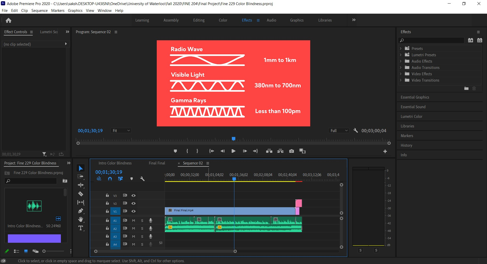

This is an educational video produced to educate people about the effects of color blindness and explores how color blind people see through various animations.

Showing different types of Color Blindness simulated using channel effects although I think I went a bit extreme as most cases in color blindnes lead to mild color variations not the extreme ones I have shown using the filters. This was a part of a really long compostion.

The 3D model of the simple shapes that I used as an example to show different types of color blindness on different colors, I tried to include some colors which are affected in different types of color blindness.

The spheres intro was in blender by animating the color on the shader nodes.

I didn't model the eye but I shaded it and animated in blender.

Another animated illustration made in Illustrator and animated in After Effects.

The final assembly was done in Premier Pro along with the audio.